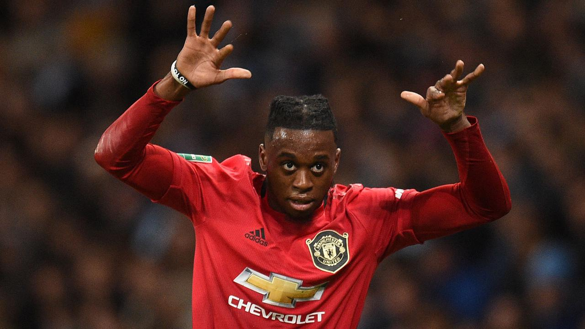
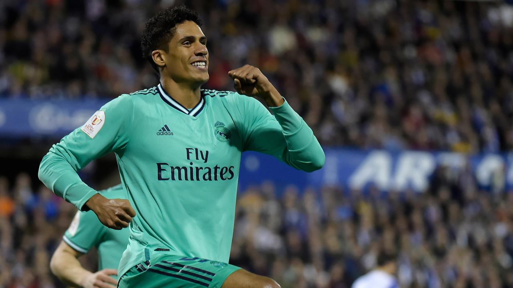

|  |

Real Madrid Beri Kabar Baik Untuk MU Soal VaraneReal Madrid sebenarnya masih ingin mempertahankan Varane. Namun keadaan membuat Los Blancos menyerah. Selengkapnya |
Wan-Bissaka Butuh PesaingManchester United sukses besar membangkitkan performa bek kiri Luke Shaw pada musim 2020-2021. Shaw terpacu tampil bagus bersama MU setelah mendapat tekanan dari bek kiri baru Alex Telles. Shaw mengalami perkembangan pesat di musim 2020-2021 karena khawatir tergusur oleh Telles yang direkrut dari FC Porto di musim panas 2020.Shaw kini juga bersinar bersama timnas Inggris di Euro 2020 / 2021. Kebangkitan Shaw musim lalu membuat MU akan mencoba formula serupa di pos bek kanan. MU akan mencarikan pesaing untuk Aaron Wan-Bissaka. Di musim 2020-2021, Wan-Bissaka selalu jadi pilihan utama karena MU tak punya stok bek kanan lain. Diogo Dalot dipinjamkan ke AC Milan. Kinerja Wan-Bissaka sebenarnya sudah bagus, namun eks pemain Crystal Palace itu dinilai masih perlu mengasah kemampuannya saat membantu penyerangan. MU pun berencana merekrut bek kanan baru untuk memicu Wan-Bissaka semakin membaik kinerjanya. Ada tiga kandidat bek kanan yang mungkin direkrut MU menurut Sportsmole. Siapa saja? Kieran TrippierTrippier tampil sangat baik di Atletico Madrid musim lalu. Dia memberikan enam assists dari 28 penampilan.Trippier ikut membantu Atletico juara La Liga. Pria 30 tahun itu juga jadi andalan pelatih timnas Inggris Gareth Southgate di Euro 2020 / 2021. Trippier membuat Wan-Bissaka tidak dibawa. Trippier tidak akan kesulitan beradaptasi dengan kerasnya Liga Inggris. Sebelumnya dia pernah main di Liga Inggris bersama Burnley dan Tottenham Hotspur. James TavernierOpsi yang cukup murah adalah James Tavernier. Pemain 29 tahun itu cocok dengan keinginan MU akan bek sayap yang piawai membantu serangan.Tavernier sangat tajam sebagai seorang bek sayap. Musim lalu Tavernier membuat 19 gol dan 16 assists dari 46 penampilan di berbagai ajang bersama Glasgow Rangers. Max AaronsKandidat lainnya yang bisa untuk investasi jangka panjang adalah Max Aaron. Pemain Norwich City ini baru berusia 21 tahun. Aaron merupakan salah satu pemain kunci Norwich berhasil kembali promosi ke Liga Inggris. Di musim 2020-2021 Aaron membuat dua gol dan lima assists dari 45 laga bersama Norwich di Divisi Championship. |